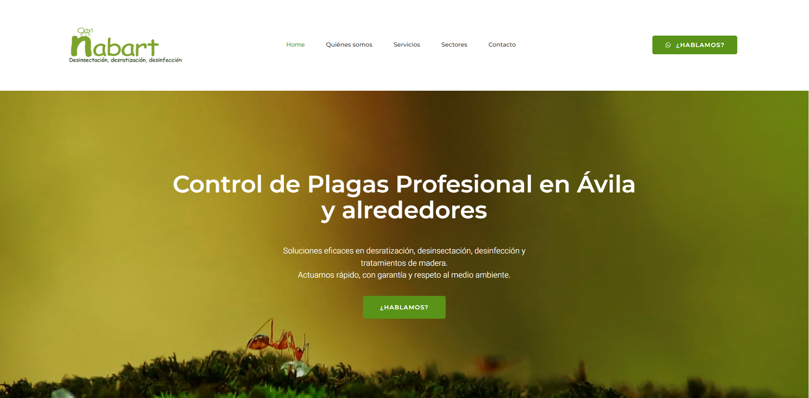
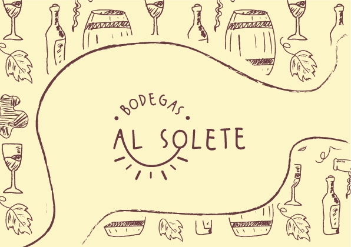
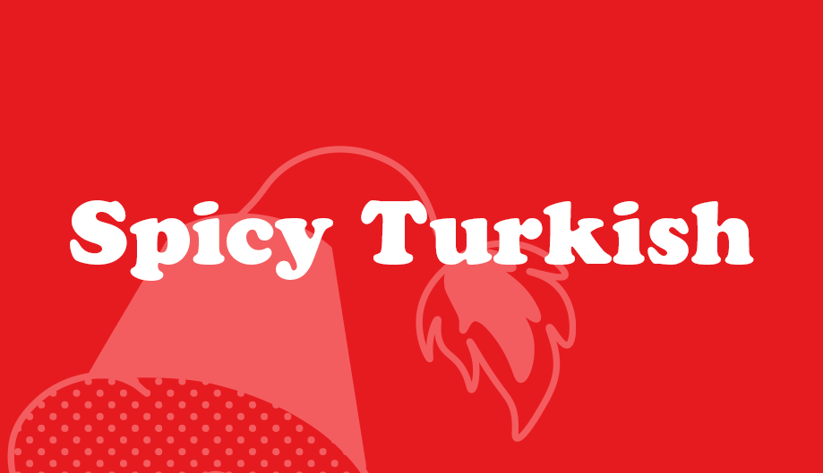
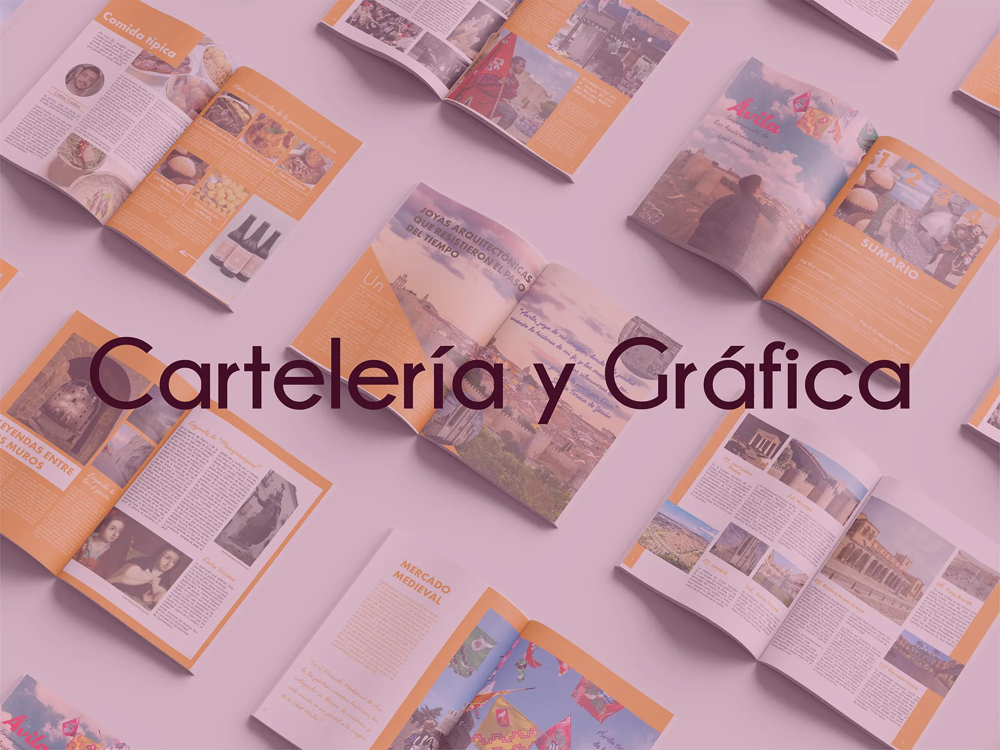
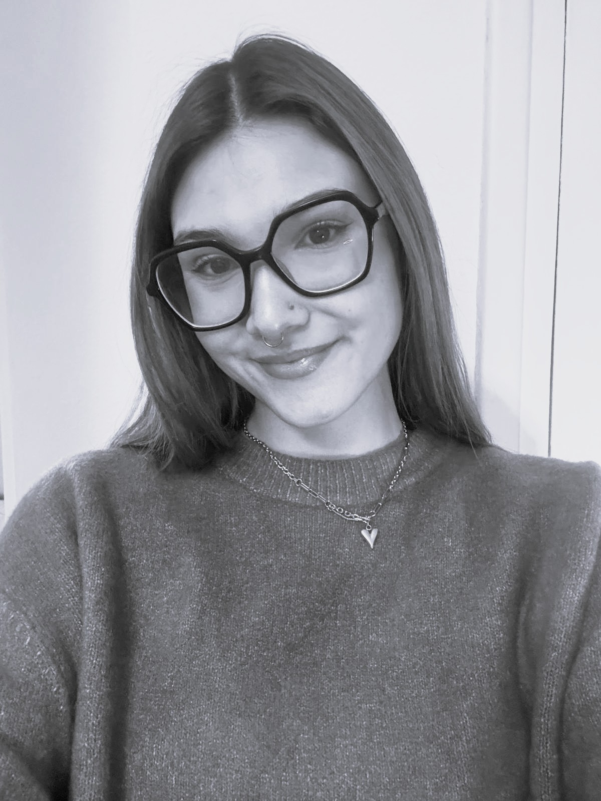
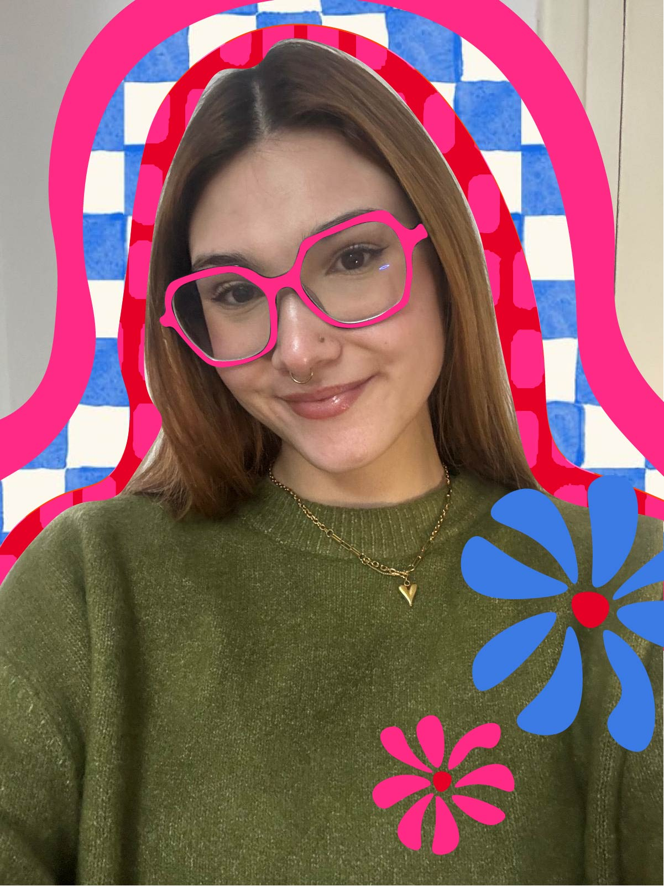

Hi ✦ I'm Laura.
Frontend Developer & Graphic / UI/UX Designer.
Bienvenido a mi pequeño rincón de internet.
Especializada en la creación integral de proyectos: desde el concepto visual y el diseño UI/UX hasta el código final. Buscando impulsar ideas de forma remota para empresas y clientes de todo el mundo.
Proyectos_

Modernización y despliegue del nuevo site de Nabart en WordPress, rediseñando la arquitectura de información y elevando la experiencia digital para un impacto mucho más actual y directo.

Proyecto de fin de grado centrado en la identidad visual completa, packaging y piezas gráficas para una bodega ficticia, complementado con una web corporativa y una estrategia de difusión audiovisual.

Reinventando la experiencia de comida turca rápida con una identidad visual inspirada en la animación clásica de los años 30.

Selección de trabajos de cartelería y diseño expositivo, combinando composición tipográfica, jerarquía visual y producción gráfica para entornos culturales y comerciales.
Hacer las cosas con intención, no solo por llamar la atención.


Creo firmemente que el buen diseño nace de saber escuchar. Entiendo el vector, entiendo el píxel y entiendo el código que los hace posibles en el navegador.
Me obsesionan los pequeños detalles: el espaciado exacto, el comportamiento de un botón bajo presión o la armonía tipográfica. No imagino diseños que no se puedan programar de forma limpia, ni pico código sin cuidar el arte final del proyecto.
Cuando no estoy frente a la pantalla depurando estilos o líneas de código, me encontrarás tejiendo crochet o diseñando identidades corporativas. Considero que la paciencia milimétrica que requiere un patrón manual es la misma disciplina que aplico para actuar frente a mis soluciones de desarrollo frontend.
Un diseño que funciona, avanza y se mantiene vivo.
my tech stack_